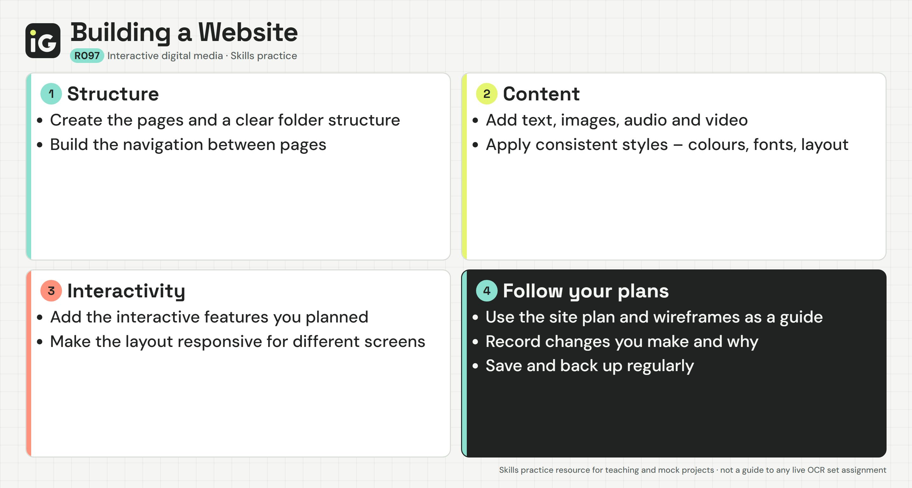

Product folder
- root / images / media / styles
- Lower-case, no spaces

Use suitable software to build the website you planned.
Use this checklist to make sure you can cover every part of this topic.
Master pages/templates apply the house style to every page, so colours, fonts, layout and navigation stay consistent while content changes.